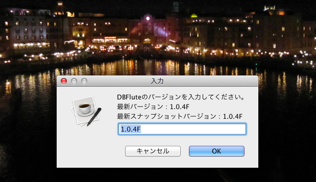
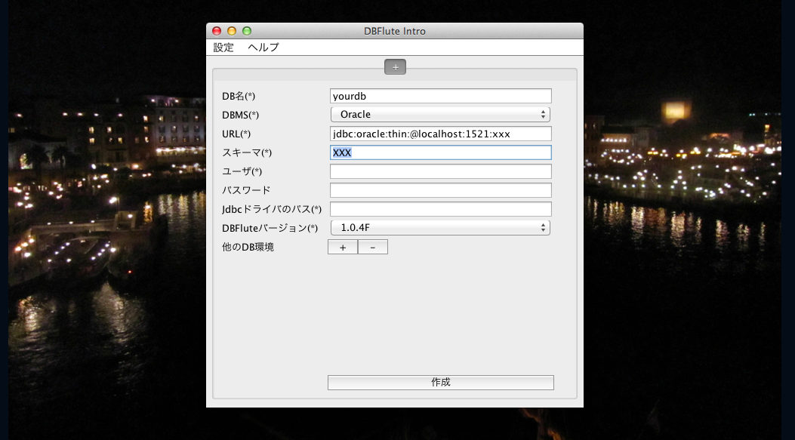
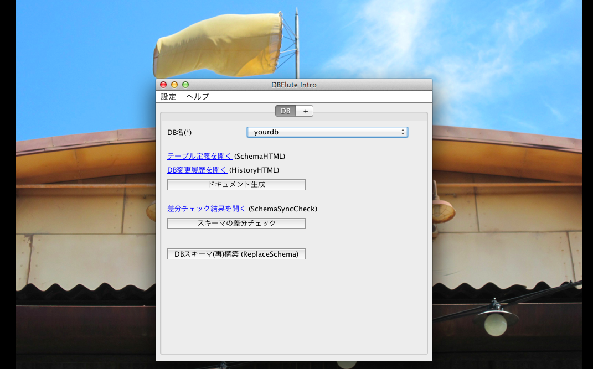
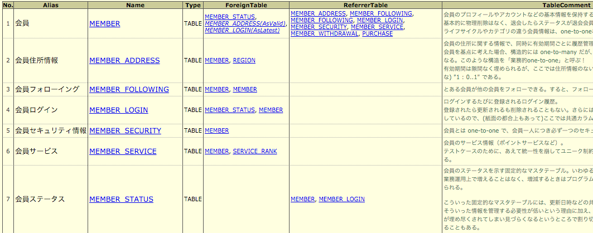
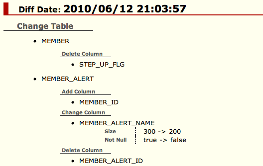

昔の DBFlute Intro (for Java6)
※こちらは、Java6 の DBFlute 用の DBFlute Intro です。
新機能や改善など、Java8版の方がメインに開発されていますので、特に大きな理由がなければJava8版をご利用ください。
Alto DBFlute の利用を支援するための、IDEなどに依存しない独立したGUIツールです。
- DBFlute Introとは？
- Introのダウンロード
- 使い方の流れ
- DBFlute Intro を起動
- まずはDBFluteダウンロード
- つなぐDBの情報を入れる
- そして、ドキュメント生成 (SchemaHTML)
- DB変更したら、また生成 (HistoryHTML)
- まだまだこれから
- DBFlute本体はどこに？
DBFlute Introとは？
アプリの外側で活躍するDBFluteの機能 (Alto DBFlute) を、インストールから実行までGUIだけで実行できるツールです。 Javaの実行環境(JRE)さえあれば利用できる導入しやすいツールです。
Github で開発されているオープンソースです。 DBFlute本体とは、独立した運用がされていますので、本家のサイトにも注目です。(ということで、ここでは、簡単な利用方法の説明だけをしていきます)
Introのダウンロード
インストールという概念はありません。単にファイル (.jar or .exe) を一つダウンロードするだけです。
こちらののリンクからダウンロードできます。
- Mac
- dbflute-intro.jar
- Windows
- dbflute-intro.zip ※zip形式になっているので要解凍
そして、以下のよう感じで、どこかのディレクトリに入れておくと良いでしょう。
e.g. DBFlute Intro のファイルを dbflute-intro ディレクトリ配下に @Directory
...
|-...
|
|-dbflute-intro
| |
| |-dbflute-intro.jar // Windows なら .exe
|
|-...
使い方の流れ
- DBFlute Intro を実行
- まずはDBFluteダウンロード
- つなぐDBの情報を入れる
- そして、ドキュメント生成 (SchemaHTML)
- DB変更したら、また生成 (HistoryHTML)
DBFlute Intro を起動
- Mac
- dbflute-intro.jar をダブルクリック ※一番最初だけ右クリック "開く" で叩く必要あり
- Windows
- dbflute-intro.exe をダブルクリック
まずはDBFluteダウンロード
DBFlute Intro を起動すると、以下のような画面が表示され、最新版のバージョン番号があらかじめ入っています。そのまま "OK" を押してみましょう。早速 DBFlute のダウンロードが始まります。
DBFluteダウンロード画面
DBFluteダウンロード画面の例 
{kind=link}
つなぐDBの情報を入れる
ダウンロードが無事終わると、今度は接続するデータベース(スキーマ)の情報を入力する画面が表示されます。 DBMSの種類、接続URL、接続ユーザーとパスワードなどを入力してDB接続環境を作成します。
DB情報入力画面
DB情報入力画面の例 
{kind=link}
入力項目の仕様
以下、それぞれの入力項目の仕様に従った入力していきます。(*)は必須項目
- DB名(*)
- 接続対象のDB環境を表す任意の名前 ※別に yourdb のままでもOK
- DBMS(*)
- DBの種類 e.g. MySQL, PostgreSQL, Oracle など
- URL(*)
- DBに接続するためのURL ※先にDBMSを選択するとひな形が自動入力される
- スキーマ
- 接続するスキーマ ※OracleやDB2では大文字で、MySQLでは不要
- ユーザ(*)
- 接続するDBユーザ ※接続スキーマに対応するユーザ
- パスワード
- DBユーザのパスワード ※間違えないように...
- JDBCドライバのパス
- JDBCドライバをドラッグ＆ドロップする ※MySQL, PostgreSQL, H2では不要
- DBFluteのバージョン(*)
- 利用するDBFluteのバージョン ※基本そのままで
- 他のDB環境
- 複数のDB環境を対象にする場合に増やせる ※後でできるのでひとまずスルー
DB接続URLの指定
DB接続のURLは、DBMSを選択することで自動入力されるURLひな形の xxx 部分にデータベース名もしくはスキーマ名を入力します。例えば、以下のような感じになります。
- MySQL
- jdbc:mysql://localhost:3306/exampledb
- PostgreSQL
- jdbc:postgresql://localhost:5432/exampledb
- Oracle
- jdbc:oracle:thin:@localhost:1521:XE
- DB2
- jdbc:db2://localhost:50000/dfexdb
- SQLServer
- jdbc:sqlserver://localhost:1433;databaseName=exampledb;
- H2 Database
- jdbc:h2:file:../src/main/resources/exampledb/exampledb
- Apache Derby
- jdbc:derby:../src/main/resources/librarydb;create=true
JDBCドライバの指定
DBFlute Intro は "JDBCドライバ" を利用して接続するため、JDBCドライバが DBFlute に同梱されていないDBMS(同梱が許されていないDBMS)の場合は、自分でダウンロードする必要があります。
- MySQL
- 同梱されているので指定不要 ※mysql-connector-java-5.1.12-bin.jar
- PostgreSQL
- 同梱されているので指定不要 ※postgresql-8.4-701.jdbc3.jar
- Oracle
- "ojdbc6.jar ダウンロード" で検索してダウンロード画面へ
- DB2
- "db2jcc.jar ダウンロード" で検索してダウンロード画面へ
- SQLServer
- "sqljdbc4.jar ダウンロード" で検索してダウンロード画面へ
- H2 Database
- 同梱されているので指定不要 ※h2-1.3.xxx.jar
- Apache Derby
- "derby ダウンロード" で検索してダウンロード画面へ
ダウンロードしたら、DBFlute Intro のDB情報入力画面に "JDBCドライバのパス" のテキストボックスにドラッグ＆ドロップしてください。 (DB接続環境の作成後にJDBCドライバはDBFlute内にコピーされるので、その後はダウンロードしたJDBCドライバは削除しても構いません)
そして、ドキュメント生成 (SchemaHTML)
DB接続環境の作成が終わると、DBFlute Intro のトップ画面が表示されます。この画面から様々な DBFlute の操作ができますが、まずはドキュメントを生成しましょう。
Introのトップ画面の例
Introのトップ画面の例 
{kind=link}
ドキュメント生成ボタン
"ドキュメント生成" ボタンを押すと、DB接続してスキーマ情報を抽出し、ドキュメント生成します。
SchemaHTML表示リンク
ドキュメント生成に成功したら、SchemaHTML表示リンクをクリックしてみましょう。
すると、ブラウザが起動して、SchemaHTML が表示されます。
SchemaHTML Example 
DB接続に失敗したら...
DB接続に失敗したら...バージョン 0.0.1 では、リカバリの機能がありません。 二つの方法があります。jarファイルの隣の dbflute_xxx/dfprop ディレクトリ配下の databaseInfoMap.dfprop をテキストエディタで開いてDB接続情報を修正するか、jarファイルの隣の dbflute_xxx と mydbflute を丸ごと削除して、DBFluteのダウンロードからやり直すか。(リカバリ機能はいずれ...)
DB変更したら、また生成 (HistoryHTML)
DBが変わったら、またドキュメント生成をしましょう。
ドキュメント生成ボタンを押して SchemaHTML を開くと、新しいスキーマの情報が表示されます。
HistoryHTML表示リンク
そして、HistoryHTMLリンクをクリックしてみましょう。DB変更の履歴が表示されます。
HistoryHTMLの例 
まだまだこれから
現時点(0.0.1)では、やれることは限られています。
- SchemaHTML
- テーブル定義ドキュメントの自動生成
- HistoryHTML
- DB変更履歴ドキュメントの自動生成
- SchemaSyncCheck
- 二つのスキーマのテーブル構造などの差分をチェック
- ReplaceSchema
- 叩くだけだが、既に環境が構築されていれば利用できる
- DB接続失敗のリカバリ
- できない ※dbflute_xxx/dfprop の databaseInfoMap.dfprop を修正
- 設定の修正・追加
- できない ※dbflute_xxx/dfprop 配下のdfpropファイルを修正
色々と調整をしようとすると、DBFluteの設定を直接テキストエディタで修正する必要があります。 DBFluteの構造を把握して、色々な機能をどんどん積極的に利用できるようにしていけるようにするのは、それはそれで良いことではあります。 ぜひ、さらなる便利な機能を使いたいと思う人は、DBFlute Intro は "入り口" だと思って、突っ込んでもらいたいと思います。
しかしながら、もっと定型的な機能や使い方にレールを敷いて、DBFlute Intro だけで利用できる機能が増えるといいなぁと感じています。 DBFlute Intro は、Github で公開されているオープンソースです。 もし、気が向いたら Pull Request をしてみてはいかがでしょうか？
DBFlute本体はどこに？
ダウンロードされた "DBFluteモジュール" と、DB接続環境を保持している "DBFluteクライアント" は、DBFlute Intro のすぐ近くで以下のような感じで配置されています。
e.g. DBFlute Intro のファイルを dbflute-intro 配下に @Directory
どこかのディレクトリ
|-...
|
|-dbflute-intro
| |-mydbflute
| | |-dbflute-1.x.x
| |
| |-dbflute_xxx // DB名が yourdb なら dbflute_yourdb
| | |-dfprop // DB接続情報が保持されている、その他もろもろの設定
| | |-log // DBFlute実行時のログ
| | |-...
| |
| |-dbflute-intro.jar
|
|-...
DBFluteモジュールは DBFlute の本体そのものであり、DBFlute Intro も人も直接ここのファイルをさわることは基本的にありません。
DBFluteクライアントは、DB接続情報などDBFluteのもろもろの設定です。一つのDBにつき、一つのクライアント(ディレクトリ)が作成されます。